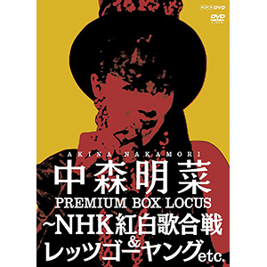

现场视频：第16张
发行年份：2015年
发行日期：9月30日
Disc 1 Let’s Go Young
| 歌名 | 作词 | 作曲 | 放送 |
|---|---|---|---|
| スローモーション | 来生えつこ | 来生たかお | 1982年8月8日 |
| セカンド・ラブ | 来生えつこ | 来生たかお | 1982年11月21日 |
| セカンド・ラブ | 来生えつこ | 来生たかお | 1983年2月20日 |
| 1⁄2の神話 | 売野雅勇 | 大沢誉志幸 | 1983年3月20日 |
| スローモーション | 来生えつこ | 来生たかお | 1983年5月15日 |
| 1⁄2の神話 | 売野雅勇 | 大沢誉志幸 | 1983年5月15日 |
| セカンド・ラブ | 来生えつこ | 来生たかお | 1983年7月10日 |
| トワイライト -夕暮れ便り- | 来生えつこ | 来生たかお | 1983年7月10日 |
| 1⁄2の神話 | 売野雅勇 | 大沢誉志幸 | 1983年7月17日 |
| 咲きほこる花に… | 来生えつこ | 来生たかお | 1983年7月17日 |
| トワイライト -夕暮れ便り- | 来生えつこ | 来生たかお | 1983年7月17日 |
| トワイライト -夕暮れ便り- | 来生えつこ | 来生たかお | 1983年7月24日 |
| スローモーション | 来生えつこ | 来生たかお | 1983年8月21日 |
| トワイライト -夕暮れ便り- | 来生えつこ | 来生たかお | 1983年8月21日 |
| トワイライト -夕暮れ便り- | 来生えつこ | 来生たかお | 1983年10月2日 |
| トワイライト -夕暮れ便り- | 来生えつこ | 来生たかお | 1983年10月9日 |
| 禁区 | 売野雅勇 | 細野晴臣 | 1983年10月9日 |
| セカンド・ラブ | 来生えつこ | 来生たかお | 1983年11月6日 |
| 禁区 | 売野雅勇 | 細野晴臣 | 1983年11月6日 |
| 1⁄2の神話 | 売野雅勇 | 大沢誉志幸 | 1983年11月13日 |
| 禁区 | 売野雅勇 | 細野晴臣 | 1983年11月13日 |
| 禁区 | 売野雅勇 | 細野晴臣 | 1984年1月15日 |
| 北ウイング | 康珍化 | 林哲司 | 1984年1月29日 |
| 禁区 | 売野雅勇 | 細野晴臣 | 1984年2月12日 |
| 北ウイング | 康珍化 | 林哲司 | 1984年2月12日 |
| 1⁄2の神話 | 売野雅勇 | 大沢誉志幸 | 1984年4月1日 |
| 北ウイング | 康珍化 | 林哲司 | 1984年4月1日 |
| 1⁄2の神話 | 売野雅勇 | 大沢誉志幸 | 1984年5月6日 |
| サザン・ウインド | 来生えつこ | 玉置浩二 | 1984年5月6日 |
| 北ウイング | 康珍化 | 林哲司 | 1984年5月27日 |
| サザン・ウインド | 来生えつこ | 玉置浩二 | 1984年5月27日 |
| セカンド・ラブ | 来生えつこ | 来生たかお | 1984年6月24日 |
| サザン・ウインド | 来生えつこ | 玉置浩二 | 1984年6月24日 |
| 北ウイング | 康珍化 | 林哲司 | 1984年7月29日 |
| サザン・ウインド | 来生えつこ | 玉置浩二 | 1984年7月29日 |
| サザン・ウインド | 来生えつこ | 玉置浩二 | 1984年8月5日 |
| 夢遥か～アサイラム～サザン・ウインド | 庄野真代・三浦徳子・来生えつこ | 小泉まさみ・玉置浩二 | 1984年8月12日 |
| 十戒 (1984) | 売野雅勇 | 高中正義 | 1984年9月2日 |
| サザン・ウインド | 来生えつこ | 玉置浩二 | 1984年9月23日 |
| 十戒 (1984) | 売野雅勇 | 高中正義 | 1984年9月23日 |
| 北ウイング | 康珍化 | 林哲司 | 1984年11月4日 |
| セカンド・ラブ | 来生えつこ | 来生たかお | 1984年11月4日 |
| 十戒 (1984) | 売野雅勇 | 高中正義 | 1984年11月4日 |
| サザン・ウインド | 来生えつこ | 玉置浩二 | 1984年12月16日 |
| 飾りじゃないのよ涙は | 井上陽水 | 井上陽水 | 1984年12月16日 |
Disc 2
Let’s Go Young
| 歌名 | 作词 | 作曲 | 放送 |
|---|---|---|---|
| 十戒 (1984) | 売野雅勇 | 高中正義 | 1985年1月6日 |
| 飾りじゃないのよ涙は | 井上陽水 | 井上陽水 | 1985年1月6日 |
| 飾りじゃないのよ涙は | 井上陽水 | 井上陽水 | 1985年2月10日 |
| スローモーション | 来生えつこ | 来生たかお | 1985年3月10日 |
| 飾りじゃないのよ涙は | 井上陽水 | 井上陽水 | 1985年3月10日 |
| ロンリー・ジャーニー | EPO | EPO | 1985年3月31日 |
| ミ・アモーレ〔Meu amor é･･･〕 | 康珍化 | 松岡直也 | 1985年3月31日 |
| 北ウイング | 康珍化 | 林哲司 | 1985年4月21日 |
| 禁区 | 売野雅勇 | 細野晴臣 | 1985年4月21日 |
| セカンド・ラブ | 来生えつこ | 来生たかお | 1985年4月21日 |
| ミ・アモーレ〔Meu amor é･･･〕 | 康珍化 | 松岡直也 | 1985年4月21日 |
| 十戒 (1984) | 売野雅勇 | 高中正義 | 1985年6月2日 |
| 飾りじゃないのよ涙は～北ウイング | 井上陽水・康珍化 | 井上陽水・林哲司 | 1985年6月2日 |
| ミ・アモーレ〔Meu amor é･･･〕 | 康珍化 | 松岡直也 | 1985年6月2日 |
| ミ・アモーレ〔Meu amor é･･･〕 | 康珍化 | 松岡直也 | 1985年6月9日 |
| SAND BEIGE -砂漠へ- | 許瑛子 | 都志見隆 | 1985年7月14日 |
| 椿姫ジュリアーナ | 松本一起 | 佐藤隆 | 1985年8月25日 |
| SAND BEIGE -砂漠へ- | 許瑛子 | 都志見隆 | 1985年9月8日 |
| SOLITUDE | 湯川れい子 | タケカワユキヒデ | 1985年10月20日 |
| 赤い鳥逃げた | 康珍化 | 松岡直也 | 1985年11月17日 |
| SOLITUDE | 湯川れい子 | タケカワユキヒデ | 1985年11月17日 |
| SOLITUDE | 湯川れい子 | タケカワユキヒデ | 1985年12月15日 |
| SOLITUDE | 湯川れい子 | タケカワユキヒデ | 1986年1月5日 |
| DESIRE -情熱- | 阿木燿子 | 鈴木キサブロー | 1986年2月23日 |
| ロンリー・ジャーニー～サザン・ウインド | EPO・来生えつこ | EPO・玉置浩二 | 1986年3月16日 |
| LA BOHÈME | 湯川れい子 | 都志見隆 | 1986年3月16日 |
| LA BOHÈME | 湯川れい子 | 都志見隆 | 1986年4月13日 |
NHK紅白歌合戦
| 歌名 | 作词 | 作曲 | 放送 |
|---|---|---|---|
| 禁区 | 売野雅勇 | 細野晴臣 | 1983年12月31日 |
| 十戒 (1984) | 売野雅勇 | 高中正義 | 1984年12月31日 |
| ミ・アモーレ〔Meu amor é･･･〕 | 康珍化 | 松岡直也 | 1985年12月31日 |
| DESIRE -情熱- | 阿木燿子 | 鈴木キサブロー | 1986年12月31日 |
| 難破船 | 加藤登紀子 | 加藤登紀子 | 1987年12月31日 |
| I MISSED “THE SHOCK” | Qumico Fucci | Qumico Fucci | 1988年12月31日 |
| 飾りじゃないのよ涙は | 井上陽水 | 井上陽水 | 2002年12月31日 |
| Rojo -Tierra- | 川江美奈子・Miran:Miran | 浅倉大介 | 2014年12月31日 |
Disc 3
Young Studio 101
| 歌名 | 作词 | 作曲 | 放送 |
|---|---|---|---|
| LA BOHÈME | 湯川れい子 | 都志見隆 | 1986年4月20日 |
| LA BOHÈME | 湯川れい子 | 都志見隆 | 1986年5月11日 |
| ジプシー・クイーン | 松本一起 | 国安わたる | 1986年6月22日 |
| ジプシー・クイーン | 松本一起 | 国安わたる | 1986年7月13日 |
| ジプシー・クイーン | 松本一起 | 国安わたる | 1986年8月17日 |
| DREAMING～予感 | 斉藤ノブ・飛鳥涼 | 与詞古・飛鳥涼 | 1986年9月7日 |
| ジプシー・クイーン | 松本一起 | 国安わたる | 1986年9月7日 |
| Fin | 松本一起 | 佐藤健 | 1986年10月19日 |
| Fin | 松本一起 | 佐藤健 | 1986年11月16日 |
| Fin | 松本一起 | 佐藤健 | 1986年12月7日 |
| TANGO NOIR | 冬杜花代子 | 都志見隆 | 1987年2月8日 |
| TANGO NOIR | 冬杜花代子 | 都志見隆 | 1987年2月15日 |
| TANGO NOIR | 冬杜花代子 | 都志見隆 | 1987年3月8日 |
| TANGO NOIR | 冬杜花代子 | 都志見隆 | 1987年4月5日 |
| 危ないMON AMOUR | 許瑛子 | 鈴木キサブロー | 1987年4月19日 |
| SOLITUDE | 湯川れい子 | タケカワユキヒデ | 1987年7月12日 |
| Fin | 松本一起 | 佐藤健 | 1987年8月9日 |
| 清教徒（アーミッシュ） | 秋元康 | 久保田利伸 | 1987年8月9日 |
| 難破船 | 加藤登紀子 | 加藤登紀子 | 1987年10月11日 |
其他节目
| 歌名 | 作词 | 作曲 | 放送 |
|---|---|---|---|
| 禁区 (第27回唱片祭歌謡大会) | 売野雅勇 | 細野晴臣 | 1983年11月1日 |
| 1⁄2の神話～セカンド・ラブ～スローモーション～少女A (偶像大競演) | 売野雅勇・来生えつこ | 大沢誉志幸・来生たかお・芹澤廣明 | 1983年12月25日 |
| 禁区 (偶像大競演) | 売野雅勇 | 細野晴臣 | 1983年12月25日 |
| SOLITUDE (おもいっきりstudio101) | 湯川れい子 | タケカワユキヒデ | 1987年1月4日 |
| Fin (おもいっきりstudio101) | 松本一起 | 佐藤健 | 1987年1月4日 |
| DESIRE -情熱- (POP JAM) | 阿木燿子 | 鈴木キサブロー | 1995年11月27日 |
| 飾りじゃないのよ涙は (POP JAM) | 井上陽水 | 井上陽水 | 1995年11月27日 |
| Tokyo Rose (POP JAM) | 中森明菜・上澤津孝 | Masaki | 1995年11月27日 |
| Tokyo Rose (Idol on Stage) | 中森明菜・上澤津孝 | Masaki | 1996年2月4日 |
| MOONLIGHT SHADOW-月に吠えろ (ASIA直播) | 高見沢俊彦 | 小室哲哉 | 1996年9月13日 |
| 愛撫 (中国揚子江 悠久の長江、三峡) | 松本隆 | 小室哲哉 | 1996年11月1日 |
Disc 4
封面&合作集
| 歌名 | 作词 | 作曲 | 放送 |
|---|---|---|---|
| スマイル・フォー・ミー (与河合奈保子合作；Let’s Go Young) | 竜真知子 | 馬飼野康二 | 1983年7月24日 |
| チャールストンにはまだ早い (Let’s Go Young) | 宮下智 | 宮下智 | 1984年8月12日 |
| 銀座カンカン娘 (第16回回忆的旋律) | 佐伯孝夫 | 服部良一 | 1984年8月18日 |
| セカンド・ラブ (与河合奈保子合作；Let’s Go Young) | 来生えつこ | 来生たかお | 1985年12月15日 |
| いっそ セレナーデ (Young Studio 101) | 井上陽水 | 井上陽水 | 1986年12月7日 |
| 飾りじゃないのよ涙は (与谷村新司合作；TOP music) | 井上陽水 | 井上陽水 | 1996年6月23日 |
| いい日旅立ち (与谷村新司合作；TOP music) | 谷村新司 | 谷村新司 | 1996年6月23日 |
综艺节目时间机器（2001年8月7日放送）
| 歌名 | 作词 | 作曲 |
|---|---|---|
| 少女A | 売野雅勇 | 芹澤廣明 |
| ミ・アモーレ〔Meu amor é･･･〕 | 康珍化 | 松岡直也 |
| コント | ||
| DESIRE -情熱-～十戒 (1984)～飾りじゃないのよ涙は | 阿木燿子・売野雅勇・井上陽水 | 鈴木キサブロー・高中正義・井上陽水 |
| It’s brand new day | Adya | Adya |
SONGS特辑 中森明菜 歌姫復活（2015年1月9日放送）
| 歌名 | 作词 | 作曲 |
|---|---|---|
| Opening | ||
| 采访 1 | ||
| 采访 2 | ||
| 異邦人 | 久保田早紀 | 久保田早紀 |
| ダンスはうまく踊れない | 井上陽水 | 井上陽水 |
| 恋 | 松山千春 | 松山千春 |
| 悪女 | 中島みゆき | 中島みゆき |
| 采访 3 | ||
| 采访 4 | ||
| スタンダード・ナンバー | 松本隆 | 南佳孝 |
| 采访 5 | ||
| NHK紅白歌合戦出演当日 | ||
| 采访 6 | ||
| 長い間 | 玉城千春 | 玉城千春 |
首发规格：4DVD: POBD-20066/9
唱片公司：Universal Music
排行榜：Oricon公信榜DVD音楽周榜第7位